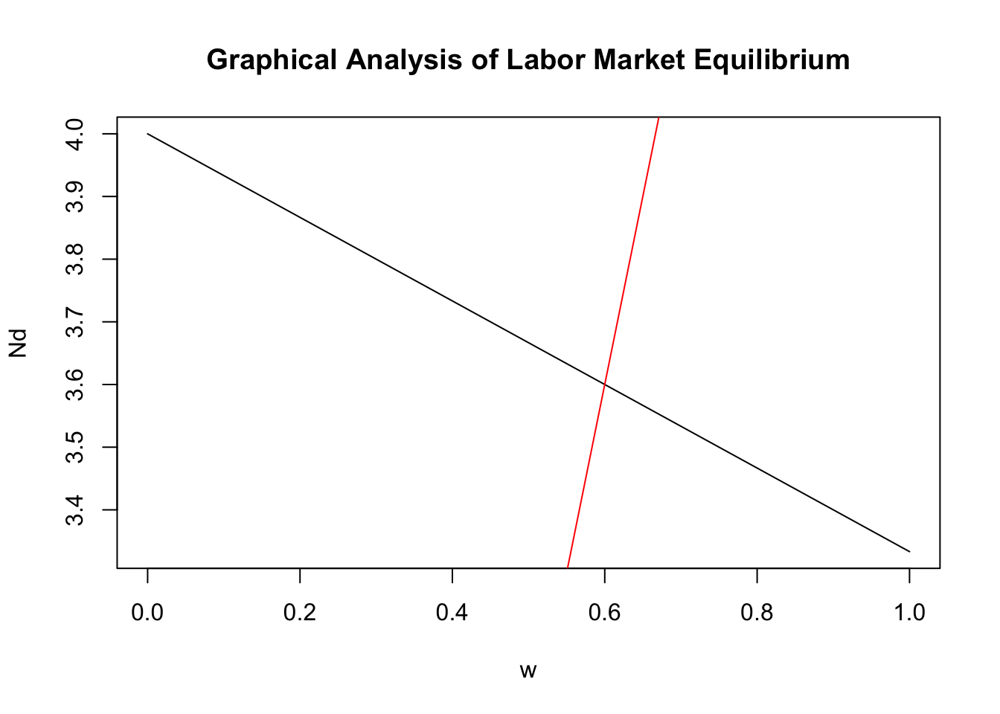
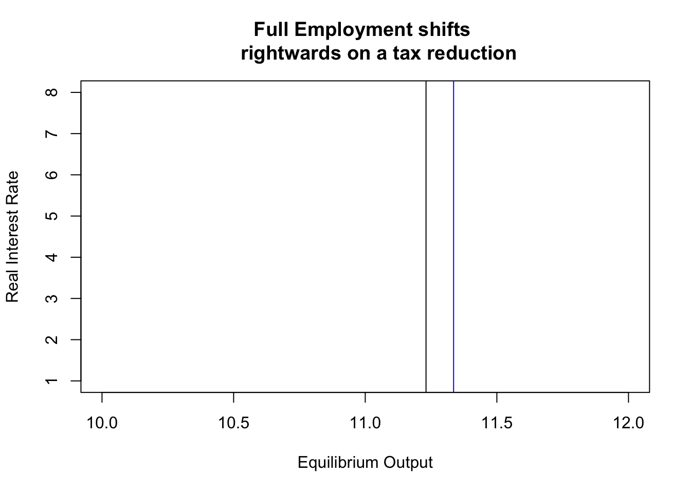

Understanding IS-LM Model Analytically
Introduction
After a preview of AD-AS we move onto a bit more detailed model using IS-LM. Note that the AD-AS model gave us \((P,Y)\) ordered pair in which \(P\) is the price which clears the goods market and \(Y\) is the level of output at which aggregate demand equals aggregate supply. In order to understand the model you need to understand three markets - the labor market, the goods market and the asset market and their interaction. Each market in turn requires you to focus on:
(a) The demand and supply forces in these markets.
(b) Their equilibrium condition which is when demand in these markets eqates with their supplies.
(c) The resultant ordered pair of (price, quantity) in each of these markets.
Labor Market Equilibrium
Consumers supply labor while firms demand labor. Operate under perfectly competitive markets i.e. do not have the power to set prices (wages) in the market or supply output which could drive down prices. Labor Demand is obtained by profit maximizing producers choosing how much to produce based on the following production funciton:
\[ y = f(N,K, A, X'_{s}) + \varepsilon_{s}, \]
where \(y\) is the output produced, \(N\) is the labor supply, \(K\) is the capital required, \(A\) is a metric of productivity and \(X_{s}'\) are other factors which could potentially affect production function. We ignore \(\varepsilon_{s}\) unobserved factors which affect business cycle movements in production for the remaining analysis.
Production function under the assumption that capital or other factors are not constrained and
\[\begin{gather} y = A \Big( \gamma_1 N - \frac{1}{2} \gamma_2 N^2 \Big)\Bigg|_{K \; \text{constant}} \end{gather}\]
Notice that this is essentially a function of one variable \(y=f(N)\) with parameters i.e. \(A, \gamma_1, \gamma_2\). Recall the profit maximization problem from Micro courses. We have two questions to answer
- How is the profit maximization problem affect the level of labor employed by firms?
- How does the marginal product of labor help us analyze the firm’s choice?
Marginal productivity of Labor (MPL) is the partial derivative of output on labor i.e. \[ \frac{\partial y}{\partial N} = A \Big( \gamma_1 - \gamma_2 N \Big) \]
Interpretation: The Marginal Product of Labor (MPL) determines the additional output produced by additional labor employed, and helps firms decide how much labor hours should it hire to remain profitable.
Given this marginal product, under perfect competition we obtain the following condition
\[ w = \text{MPL} = A \Big( \gamma_1 - \gamma_2 N \Big) \]
- Rearranging this gives us labor demand as a function of real wage:
\[ N = \overbrace{\frac{\gamma_1}{\gamma_2}}^{intercept} - \underbrace{\frac{1}{A \gamma_2}}_{slope} w \]
This is only labor demand and does not complete the market equilibirum.
Labor supply on the other hand is determined by consumers who are also suppliers of labor.
Ad-Hoc Labor Supply
- Let us assume a linear upward sloping labor supply of the following form:
\[ N = \underbrace{n_{0}}_{\text{intercept}} + \overbrace{n_1 (1-t)}^{\text{slope}} w \]
Notice that the slope is variable here and depends upon the rate of taxation . Does this make sense to you?
Lets understand how the rate of taxation affects labor supply decision. Consider two types of individuals. The rich gets taxed at 40% i.e. \(t_r = 0.40\) while the poor gets taxed at 15% i.e. \(t_p = 0.15\).
Let us assume that \(n_1\) for both is identical and is 1. Let us assume \(n_0 = 6\) for both and only tax rates differ for them.
Which individual responds more to wages and why?
# simulating 100 values of wages from 0 to 1
w = seq(0,1, length = 100)
n_0 = 6
n_1 = 1
t_p = 0.15
t_r = 0.40
Np = n_0 + n_1 * (1-0.15) * w
Nr = n_0 + n_1 * (1-0.40) * w# Rich individual's slope is flatter.
plot( w, Nr, type = "l",
main = "Comparing Two Tax Rates and Labor Supply")
# Poor individual's slope is steeper
lines( w, Np, col = "red") 
Once we have both labor demand and supply, we can obtain the labor market equilibrum as a pair of price, output i.e. \((N, w)\) so that labor demanded by the firm exactly equals labor supplied by the consumers.
When both are acting optimally on their own accord the equilibrium implies the following equality
\[ \frac{\gamma_1}{\gamma_2} - \frac{1}{A \gamma_2} w \equiv n_{0} + n_1 (1-t) w \]
- This implies the following equilibrium wage:
\[ w = \frac{A (\gamma_1 - n_0 \gamma_2)}{A \gamma_2 n_2 (1-t) + 1} \]
Equilibrium price for the labor market is thus dependent upon the model paramters and we can understand how equilibrium wage changes when any of these variables change.
Equilibrium output can be obtained by substituting the above in either labor demand or labor supply to obtain
\[ N = \frac{n_0 + n_1 \gamma_1 A (1-t)}{1 + n_1 \gamma_2 A (1-t)}\]
- We can also understand this equilibirum graphically using our labor supply and following labor demand:
# generating random wage numbers
w = seq(0,1, length = 100)
# parameter values
gamma1 = 2
gamma2 = 0.5
A = 3
n_0 = 6
n_1 = 1
t = 0.35
# labor demand equation
Nd = (gamma1/gamma2) - (1/(A*gamma2)) * w
# labor supply equation
Ns = n_0 + n_1 * (1-t) * w# examining equilibrium graphically
plot( w, Nd, type = "l",
main = "Graphical Analysis of Labor Market Equilibrium")
abline( w, Ns, col = "red")
Connecting Labor and Goods Market(s)
There are two interactions between goods and labor markets.
- Consumer earns wages in labor market and buys goods in the goods market.
- Firm produces goods in the goods market with the labor it hired in the labor market.
We can use either of these linkages to go to the goods market and evaluate its status. We use the second.
When we substitute employment obtained previously in the production function, we get the total production in the goods market.
\[ y = A \Big( \gamma_1 N - \frac{1}{2} \gamma_2 N^2 \Big) \] \[N = \frac{n_0 + n_1 \gamma_1 A (1-t)}{1 + n_1 \gamma_2 A (1-t)} \] \[Y_{FE} = A \Bigg[ \gamma_1 \bigg(\frac{n_0 + n_1 \gamma_1 A (1-t)}{1 + n_1 \gamma_2 A (1-t)} \bigg) - \frac{1}{2} \gamma_2 \bigg(\frac{n_0 + n_1 \gamma_1 A (1-t)}{1 + n_1 \gamma_2 A (1-t)} \bigg)^2 \Bigg]\]
- Using the above expression for our parameter values we can obtain the full employment equilibrium as
# parameter values
gamma1 = 2
gamma2 = 0.5
A = 3
n0 = 6
n1 = 1
t = 0.35
Y = A * ( gamma1 * ((n0 + n1 * gamma1 * A * (1-t))
/(1+n1 * gamma2 * A * (1-t))) - (1/2)
* gamma2 * ((n0 + n1 * gamma1 * A * (1-t))/
(1+n1 * gamma2 * A * (1-t)))^2)
Y # our full employment output for given parameter values## [1] 11.23089- Plotting full employment output and examining the effect of change in parameters
i = seq(0,10, length = 100)
Y = A * ( gamma1 * ((n0 + n1 * gamma1 * A * (1-t))/
(1+n1 * gamma2 * A * (1-t))) - (1/2) *
gamma2 * ((n0 + n1 * gamma1 * A * (1-t))/
(1+n1 * gamma2 * A * (1-t)))^2) + 0*iplot(Y,i, type = "l",
xlab = "Equilibrium Output",
ylab = "Real Interest Rate", ylim = c(1,8))
abline(h=0, col="blue")
Use the discussion in text chapter 9 to understand effect of an increase in productivity on full employment output.
Lets understand the effect of a reduction in tax.
# parameter values
gamma1 = 2
gamma2 = 0.5
A = 3
n0 = 6
n1 = 1
t = 0.35Y_old = A * ( gamma1 * ((n0 + n1 * gamma1 * A * (1-t))
/(1+n1 * gamma2 * A * (1-t))) - (1/2)
* gamma2 * ((n0 + n1 * gamma1 * A * (1-t))/
(1+n1 * gamma2 * A * (1-t)))^2)
t1 = 0.25 # lower taxes
Y_new = A * ( gamma1 * ((n0 + n1 * gamma1 * A * (1-t1))/
(1+n1 * gamma2 * A * (1-t1))) - (1/2)
* gamma2 * ((n0 + n1 * gamma1 * A * (1-t1))/
(1+n1 * gamma2 * A * (1-t1)))^2)
print(paste(Y_old, " ", Y_new))## [1] "11.2308924851787 11.3356401384083"- Full employment output increases. What happens to labor supply and labor demand as a result of tax?
i = seq(0,10, length = 100)
Y_old = A * ( gamma1 * ((n0 + n1 * gamma1 * A * (1-t))/
(1+n1 * gamma2 * A * (1-t))) - (1/2)
* gamma2 * ((n0 + n1 * gamma1 * A * (1-t))/
(1+n1 * gamma2 * A * (1-t)))^2) + 0*i
Y_new = A * ( gamma1 * ((n0 + n1 * gamma1 * A * (1-t1))/
(1+n1 * gamma2 * A * (1-t1))) - (1/2)
* gamma2 * ((n0 + n1 * gamma1 * A * (1-t1))/
(1+n1 * gamma2 * A * (1-t1)))^2) + 0*iplot(Y_old,i, type = "l", xlab = "Equilibrium Output",
ylab = "Real Interest Rate",
ylim = c(1,8), xlim = c(10,12),
main = "Full Employment shifts
rightwards on a tax reduction")
lines(Y_new, i, col="blue")
Goods Market Equilibirum in a Macroeconomic Model
Notice that we have partly moved onto the labor market already. We have the full employment aggregate supply by firms so that \(Y^* = Y_{FE}\)
In order to understand the goods market equilibirum, we start with the main components of aggregate demand in a closed economy.
\[Y = C^d + I^d + G \]
- \(C^d\) is the desired consumption demand by individuals in an economy. We assume that a maximixing agent chooses consumption and labor supply such that his resultant consumption demand looks like the following:
\[C^d = c_0 + c_y (Y-T) - c_r r ,\]
where \(c_0 > 0, c_y \in (0,1)\) and \(c_r \geq 0\) are parameters representing intercept, marginal propensity to consume and marginal propensity to consume based on rate of interest changes respectively.
(Y - T) is disposable income and \(r\) is the real interest rate.
Consumption Function
c0 = 50
cy = 0.6
T = 20
cr = 0.2
r = seq(0,10, length = 100)
Y = seq(-50, 500, length = 100)
C = c0 + cy * ( Y-T) - cr * rplot(Y,C, type = "l", xlab = "Output",
ylab = "Consumption", ylim = c(-5,400),
xlim = c(-5,400),
main = "Aggregate Consumption Function", col = "blue")
abline(v = 0, h=0, col="black")
- T, denotes total tax revenue obtained from consumers, out of which a part is lumpsum taxes \(t_0\) and the remaining depends on a consumer’s income such that:
\[ T = t_0 + tY \]
Investment Function
- \(I^d\) is the desired investment similar to desired consumption. Similar to taxes, investment is assumed to have a lumpsum component as well as a component which responds to rate of interest such that:
\[ I^d = i_0 + i_r r ,\]
where \(i_0,i_r > 0\). Why do we call \(I^d\) and \(C^d\) desired investment and consumption?
Finally, \(G\) is assumed to be government spending exogenous i.e. we do not explicitly specify G and treat it as a parameter.
We can simplify the expression of demand by substituting the definitions of \(C^d, I^d\) and \(G\) to obtain
\[ Y = \frac{c_0 + c_y t_0 + i_0 + G}{1-c_y (1-t)} - \frac{c_r + i_r}{1-c_y (1-t)} r \]
This is the analytical expression for IS curve in which savings equals investment which implies \(Y = C^d + I^d + G\).
We can write the expression as:
\[ Y = \beta_0 - \beta_1 r,\] \[\text{where}\; \beta_0 = \frac{c_0 + c_y t_0 + i_0 + G}{1-c_y (1-t)} \] \[\beta_1 = \frac{c_r + i_r}{1-c_y (1-t)} \]
- Infering from a goods market equilibrium tells us (a) it is linear in (Y,r) space and (b) has a slope \(\beta_1\) and intercept \(\beta_0\)
c0 = 50
cy = 0.6
i0 = 30
G = 20
t0 = 5
t = 0.35
cr = 0.2
ir = 0.4
beta0 = (c0 + cy* t0 + i0 + G)/(1-cy *(1-t))
beta1 = (cr + ir)/(1-cy * (1-t))
r = seq(0,10, length = 100)
Y = beta0 - beta1 * rplot(Y, r, type = "l", xlab = "Output",
ylab = "Real interest rate",
ylim = c(-2,10),
main = "IS Curve", col = "blue")
Regression and Goods Market Equilibrium
We obtain goods market equilibirum which represents the following structure: \[ y = \beta_{0}^{IS} + \beta_{1}^{IS} r \]
Mathematically, what does this tell you? (Hint: Think about the functional form)
Can you infer the responsiveness of interest rate on output from this expression?
We regress GDP (\(y\)) on real interest rate (\(r\)) with a constant.
We obtain \(\hat{\beta_{0}}\) and \(\hat{\beta_{1}}\).
Do you think these would represent \(\beta_{0}\) and \(\beta_{1}\) shown analytically above?
No, because \(r\) is influenced by factors in the money market, so what appears as the causal impact of \(r\) on \(y\) is partly influenced by interactions in the money market too.
So regressing \(y\) on \(r\) would provide you a biased estimate of \(\beta_1^{IS}\).
Theory : To complete the picture of our model economy, we venture into the third market.
Asset Market Equilibirum in a Macroeconomic Model
Recap : We have discussed the demand and supply in two markets. Similarly the demand and supply in money market should be identified in order to understand its equilibirum.
Note : ABC uses a convention of talking about asset markets in general. That is a broader approach and should be followed.
Money Demand (Real) : is represented by the following relation:
\[ \frac{M^d}{P} = l_{0} + l_y Y - l_r (r+\pi^e),\]
where \(M^d\) is the nominal money demand, \(P\) is a price index, \(l_0, l_y, l_r >0\) are parameters, \(\pi^e\) is the expected inflation rate.
Notice that \(l_0\) is the demand for money which is not dependent upon income or interest rate. It could be concieved as minimum transactions demand.
\(l_y\) measures the responsiveness of money demand to output and \(l_r\) to nominal rate of interest.
Notice that Fisher’s Rule gives us the relation between nominal and real interest rate which is used here.
Money Supply : is according to what we call the Taylor’s rule. It implies controlling money such that the equilibrium real interest rate is within the bounds decided by the RBI.
Let us assume the equilibirum rate of interest is within these bounds such that money supply is given by \(M^s\).
Equilibirum in the money market implies:
\[ \frac{M^s}{P} \equiv l_{0} + l_y Y - l_r (r+\pi^e)\]
Notice here that we have additional parameters- \(M,\pi^e\) for the model which feature just like \(A\), or \(G\) previously.
Another important thing to notice is that these are differet from \(\gamma_1, \gamma_2, n_0, n_1, c_0, c_y, c_r, t_0, t, i_0, i_r\) and now \(l_0, l_y, l_r\). Why?
Simplifying equilibrium implies a relation between output and real interest rate depicting the LM curve of the form:
\[ Y = \frac{M P^{-1} + l_0 + l_r \pi^e}{l_y} + \frac{l_r}{l_y} r \]
- Mathematically, structure is similar to the IS-curve and could be represented as:
\[ \begin{aligned} Y &= \beta_2 + \beta_3 r, \\ \beta_2 &= \frac{M P^{-1} + l_0 + l_r \pi^e}{l_y} \\ \beta_3 &= \frac{l_r}{l_y} \end{aligned} \]
- Read chapter 9 and understand the factors which shift LM curve contained in \(\beta_2\) and the factors which cause a movement along an existing curve.
Practice Question
Q1. We work through the labor market for this question. Consider the following production function
\[ Y = A L^\alpha K^\beta \]
Notice that even though there is capital in the production function, we assume that the firm does not get constrained by capital. (Hint: You can assume it to be a parameter just like \(A\).)
What is the expression for labor demand for this economy?
Labor demand is obtained by first finding out the marginal productivity of labor and then equating it with the real wages faced by producer.
Producer: cannot set real wages as he is in perfectly competitive market
\[ \frac{\partial Y}{\partial L} = A \alpha L^{\alpha-1}K^{\beta} = w \] Rearraning we get:
\[ L = \bigg( \frac{w}{\alpha A K^{\beta}}\bigg)^{\frac{1}{\alpha - 1}} \]
Correct option was (c)
- \[ L = \frac{\alpha K^\beta A}{w L^{\alpha-1}}\]
- \[ L = \frac{w \alpha K^\beta A}{L^{\alpha-1}}\]
- \[ L = \bigg(\frac{w}{\alpha K^\beta A}\bigg)^{\frac{1}{\alpha - 1}}\]
- \[ L = \bigg(\frac{w}{K^\beta A}\bigg)^{\frac{1}{\alpha - 1}}\]
Q2. Now assume that the labor supply by consumers in this economy is of the following form:
\[ L = \Big[ K^{-\beta} n_0 + n_1 (1-t) w K^{-\beta} \Big]^{\frac{1}{\alpha-1}} \]
In equilibrium for the labor market, you know that the demand for labor by firms is exactly met my the supply of such labor by these consumers. Notice that consumers are also owners of capital. The amount of capital they own affects their labor supply. How does it affect a consumer’s labor supply and which could be the associated reasons?
Slight re-write implies the following form:
\[ L = K^{\frac{-\beta}{\alpha - 1}} \Big[ n_0 + n_1 (1-t) w \Big]^{\frac{1}{\alpha-1}} \] - Note that \(1 > \beta > 0\) and \(\alpha \in (0,1)\) implies that \(K^{\frac{\beta}{1-\alpha} > 0}\). Thus when K increases, L also increases.
- The correct answer is (a). And the practice quiz answer was incorrect. The reasoning could be one of the many reasons you can think of, but the relation is obtained from mathematical formaulation.
- If a consumer owns more capital, he supplies more labor because he wants to use his capital.
- If a consumer owns more capital, he supplies less labor because he prefers leisure over labor.
- If a consumer owns more capital, he supplies less labor because he earns rents from owning the capital.
- If a consumer owns more capital, he supplies more labor because his real wages are more than the rents on capital.
Q3. With the labor demand corresponding to the following production function \[ Y = A L^\alpha K^\beta \]
- And the labor supply corresponding to the following:
\[ L = \Big[ K^{-\beta} n_0 + n_1 (1-t) w K^{-\beta} \Big]^{\frac{1}{\alpha-1}} \] What is the equilibrium real wage for this model economy?
From earlier \(L = \Big( \frac{w}{\alpha A K^{\beta}} \Big)^{\frac{1}{\alpha - 1}}\) from labor demand and above labor supply, we equate the RHS to obtain
\[ w = \frac{\alpha A n_0}{1-\alpha n_1 A (1-t)} \]
Option (a) was correct.
- \[ w = \frac{\alpha A n_0}{1-n_1 (1-t) \alpha A} \]
- \[ w = \frac{\alpha}{1-n_1 (1-t) \alpha A} \]
- \[ w = \frac{\alpha A n_0}{1-n_1 (1-t) A} \]
- \[ w = \frac{1-n_1 (1-t) \alpha A}{\alpha A n_0} \]
Q4. With the labor demand corresponding to the following production function \[ Y = A L^\alpha K^\beta \] with an equilibrium employment as follows: \[ L = \bigg[ \frac{n_0}{K^\beta \big[ 1 - n_1 (1-t) \alpha A \big]} \bigg]^{\frac{1}{\alpha - 1}} \]
What is the full employment equilibirum output?
Simple careful substitution would give you the following answer. Note that the quiz again had incorrect equilibrium employment which led to incorrect full employment output. The correct answer is:
\[ Y = \frac{A n_0^{\frac{\alpha}{\alpha - 1}}}{ \Big[ 1-\alpha n_1 A (1-t)\Big]^{\frac{\alpha}{\alpha - 1}}} K^{\frac{\beta (\alpha - 2)}{\alpha-1}} \]
Check and let me know if there is any error.
Your options were the following and none of which was correct. For future quizzes, you would get double the points if you point out algebraic errors.
- \[ Y_{FE} = \frac{A n_0^{1-\alpha}}{K^\alpha \Big[ 1 - n_1 (1-t) \alpha A \Big]}\]
- \[ Y_{FE} = \frac{A n_0^{\alpha}}{K^{\alpha - 1} \Big[ 1 - n_1 (1-t) \alpha A \Big]}\]
- \[ Y_{FE} = \frac{A n_0^{\alpha}}{K^\alpha \Big[ 1 - n_1 (1-t) \alpha A \Big]}\]
- \[ Y_{FE} = \frac{A n_0^{1-\alpha}}{K^{\alpha-1} \Big[ 1 - n_1 (1-t) \alpha A \Big]}\]
Q5. Consider the following model economy with a production function \[ Y = A L^\alpha K^\beta \] an equilibrium employment: \[ L = \bigg[ \frac{n_0}{K^\beta \big[ 1 - n_1 (1-t) \alpha A \big]} \bigg]^{\frac{1}{\alpha - 1}}\]
Assume the following parameter values and evaluate the full employment output for this economy. \[ n_0 = A = \alpha = 1\] \[K = 2\] \[t = 0.5\] \[n_1 = 0.5\]
# specify the parameter values in R
n0 = 1
A = 1
alpha = 0.3
K = 2
t = 0.5
n1 = 0.2
beta = 1How am I solving this? Simply telling R to calculate Y_fe for these parameter values using the following code:
# write the expression in R
Yfe = (A * n0^(alpha/(alpha-1)) *
K^(beta*(alpha-2)/(alpha-1))) /
(1 - alpha * n1 * A * (1-t))^(alpha/(alpha-1))
# remember to put brackets properly
cat(c("Your full employment output is ", Yfe))## Your full employment output is 5.31378024460662All the options which followed were incorrect due to mistake in equilibrium employment. Again, its best to check your calculations (even for an instructor!!)
- \(Y_{FE} = 0.50\)
- \(Y_{FE} = 0.66\)
- \(Y_{FE} = 0.75\)
- \(Y_{FE} = 1.00\)
Q5. In this exercise, we explore the IS-curve. We have the consumption function of the following form: \[ C^d = c_0 + c_y (Y-T) - c_r r \]
- However, let us assume that there are no taxes in this economy i.e. \(T = 0\) and let us assume government spending in this economy reduces private consumption. Think of public health. When government gives you good health care facilities as in Sweden or Norway, you do not spend out of your own pocket on health care. This could be represented as follows:
\[ C^d = c_0 + c_y Y - c_r r - c_g G \] We have investment in this economy as follows:
\[ I^d = i_0 - i_r r\]
For the following parameter values, find the equation of the IS curve for this economy.
variables <- c("c_0", "c_y", "c_r", "c_g", "i_0" ,"i_r", "G")
values <- c(100, 0.8, 500, 0.5, 100, 500, 200)
x <- data.frame(variables, values)| Parameter | Value |
|---|---|
| \(c_0\) | 100 |
| \(c_y\) | 0.8 |
| \(c_r\) | 500 |
| \(c_g\) | 0.5 |
| \(i_0\) | 100 |
| \(i_r\) | 500 |
| \(G\) | 200 |
- Start with the goods market equilibrium condition:
\[ Y = C^d + I^d + G\]
- Simplifying and collecting terms give you:
\[ Y ( 1-c_y) = c_0 + i_0 - c_g \bar{G} + \bar{G} - (c_r + i_r) r \] - Further simplify and substitute parameter values: \[ \begin{aligned} Y = \frac{300}{0.2} - \frac{1000}{0.2} r \\ Y = 1500 - 5000 r \end{aligned} \]
The correct answer was (a)
- \[ Y = 1500 - 5000 r \]
- \[ Y = \frac{300}{0.2} - \frac{1000}{0.5} r \]
- \[ Y = \frac{300}{0.5} - \frac{1000}{0.2} r \]
- \[ Y = 600 - 10000 r \]
Q6. If the full employment equilibirum for this economy is 1000, what are the equilibrium values for desired consumption and investment?
This was a matter of simple substitution after you found equilibrium rate of interest.
Consider Desired consumtpion after you solve for equilibrium rate of interest \(r^*\) \[ C^d = 100 + 0.8 ( 1000) - 500(0.1) - 0.5(200) \]
Similarly for Investment
The correct answer was (b)
- \[ C^d = 750, I^d = 250 \]
- \[ C^d = 750, I^d = 50 \]
- \[ C^d = 550, I^d = 150 \]
- \[ C^d = 500, I^d = 250 \]
General Equilibirum in a Macroeconomic Model
Recap: We have all the markets in equilibrium individually. Naturally, the way we have modeled these markets includes specifying their linkages, though we did not explicitly talk about it.
Note: Skip this section if you have understood the Lecture on Monday, September 7,2020.
To understand this clearly we can write all the equilibrium conditions of the markets and the resultant interlinkages. When we do so, we obtain a complete macroeconomic system. Let us examine the system.
The first three expressions are the labor market conditions starting with labor demand \(N^d\), labor supply \(N^s\) and equilibrium employment \(N\). They provide independent pieces of information for solving the model. First tells us the behaior of the firms when the are optimizing agents, Second, tells us the behavior of consumers when they are optimizing their labor supply to maximize their utility. Third tells us about their equilibrium interaction in the market.
Similarly the next three equations tell us about the goods market. Notice that the \(Y^s\) is the long run supply at full employment. The demand is a resultant of the components demand in the goods market. The third equation tells us that we have IS and FE interaction in equilibrium.
The last three equations describe the asset (or money market) in similar fasion.
\[ \begin{aligned} N^d & = \frac{\gamma_1}{\gamma_2} - \frac{1}{A \gamma_2} w \\ N^s & = n_{0} + n_1 (1-t) w \\ N^d & = N^s = N \\ Y^d & = \frac{c_0 + c_y t_0 + i_0 + G}{1-c_y (1-t)} - \frac{c_r + i_r}{1-c_y (1-t)} r \\ Y^s & = Y_{FE} = A \Bigg[ \gamma_1 \bigg(\frac{n_0 + n_1 \gamma_1 A (1-t)}{1 + n_1 \gamma_2 A (1-t)} \bigg) - \frac{1}{2} \gamma_2 \bigg(\frac{n_0 + n_1 \gamma_1 A (1-t)}{1 + n_1 \gamma_2 A (1-t)} \bigg)^2 \Bigg] \\ Y^d & = Y^s \\ M^d & = l_{0} P + l_y P Y - l_r P (r+\pi^e) \\ M^s & = \bar{M} \\ M^d & = M^s \end{aligned} \]
- We could simplify this system by substituting \(N^d\) and \(N^s\) as \(N\), \(Y^d\), \(Y^s\) as \(Y_{FE}\), and \(M^d, M^s\) as \(\bar{M}\). We are doing so to reduce as many varaibles as possible and simplify the system. We are interested in (Y, P and r) in order to draw equivalence between IS-LM and AD-AS equations.
\[ \begin{aligned} N & = \frac{\gamma_1}{\gamma_2} - \frac{1}{A \gamma_2} w \\ N & = n_{0} + n_1 (1-t) w \\ Y_{FE} & = \frac{c_0 + c_y t_0 + i_0 + G}{1-c_y (1-t)} - \frac{c_r + i_r}{1-c_y (1-t)} r \\ Y_{FE} & = A \Bigg[ \gamma_1 \bigg(\frac{n_0 + n_1 \gamma_1 A (1-t)}{1 + n_1 \gamma_2 A (1-t)} \bigg) - \frac{1}{2} \gamma_2 \bigg(\frac{n_0 + n_1 \gamma_1 A (1-t)}{1 + n_1 \gamma_2 A (1-t)} \bigg)^2 \Bigg] \\ \bar{M} & = l_{0} P + l_y P Y - l_r P (r+\pi^e) \\ M^s & = \bar{M} \\ \end{aligned} \]
- Since there are 6 equations, there are 6 variables which could be solved within the model. They are \(N, w, r, Y_{FE}, P, M^s\). The remaining are parameters for the model. We can further reduce this system eliminating \(N, w\) and \(M^s\) to obtain:
\[ \begin{aligned} Y_{FE} & = A \Bigg[ \gamma_1 \bigg(\frac{n_0 + n_1 \gamma_1 A (1-t)}{1 + n_1 \gamma_2 A (1-t)} \bigg) - \frac{1}{2} \gamma_2 \bigg(\frac{n_0 + n_1 \gamma_1 A (1-t)}{1 + n_1 \gamma_2 A (1-t)} \bigg)^2 \Bigg] \\ Y_{IS} & = \frac{c_0 + c_y t_0 + i_0 + G}{1-c_y (1-t)} - \frac{c_r + i_r}{1-c_y (1-t)} r \\ Y_{LM} & = \bigg( \pi^e - \frac{l_0}{l_r}\bigg) \bigg(\frac{l_r}{l_y}\bigg) + \bigg( \frac{1}{l_y} \bigg) \frac{\bar{M}}{P} + \bigg(\frac{l_r}{l_y}\bigg) r \end{aligned} \]
These equations can be solved for three endogenous variables namely - \(Y, P\) and \(r\), where all other variables are either parameters or exogenous variables treated as “pseudo parameters”
Pseudo Parameters: are variables whose values are determined or derived from data. These characterize the economy (\(A, \pi^e\)) and the stance of policy (\(\bar{M}, G, t\)).
- A: denotes the productivity shock which measures the technological capacity of an economy.
- \(\pi^e\): denotes the expected inflation
- \(\bar{M}\) denotes the supply of money by a central bank
- G denotes total government spending on transfer of ration (provision), building of roads, bridges as well as the money spend paying government employeer.
- t denotes the average rate of income tax
Parameters: are the remaining variables which are neither pseudo parameters nor endogenous variables.
- \(\gamma_1, \gamma_2\) are production function of labor demand parameters
- \(n_0, n_1\) represent aspects of labor supply function
- \(c_0, c_y\) and \(c_r\) represent consumption function parameters
- \(i_0, i_r\) are investment function parameters
- \(l_0, l_y, l_r\) are money demand function parameters.
Solution of a model implies finding values of endogenous variables in terms of exogenous variables or parameters.
We can use the full employment equilibrium derived earlier (\(Y_{FE}\)) in terms as a solution in itself. It only depends upon exogenous variables and parameters. We use this to substitute in the IS curve to obtain equilibrium real interest rate as follows:
\[ Y^* = Y_{FE} \]
- Using this to simplify IS curve we obtain \(r^*\):
\[ \begin{aligned} Y_{FE} (1-c_y (1-t)) & = (c_0 + c_y t_0 + i_0 + G) - (c_r + i_r) r \\ r^{*} & = \underbrace{\frac{(c_0 + c_y t_0 + i_0 + G)}{(c_r + i_r)}}_{\alpha_{IS}} - \overbrace{\frac{(1-c_y (1-t))}{(c_r + i_r)}}^{\beta_{IS}} Y_{FE} \end{aligned} \]
- We can use this and \(Y^*\) to solve for \(P^*\) in the LM curve as:
\[ \begin{aligned} P^* = \frac{\bar{M}}{l_y Y_{FE} + l_0 - l_r ( \pi^e + \alpha_{IS} - \beta_{IS} Y_{FE})} \end{aligned} \]
- From the LM equation obtained above:
\[ \begin{aligned} Y_{LM} & = \bigg( \pi^e - \frac{l_0}{l_r}\bigg) \bigg(\frac{l_r}{l_y}\bigg) + \bigg( \frac{1}{l_y} \bigg) \frac{\bar{M}}{P} + \bigg(\frac{l_r}{l_y}\bigg) r \\ r & = \overbrace{\bigg(\frac{l_0}{l_r} - \pi^e \bigg) }^{\alpha_{LM}} - \frac{1}{l_r} \frac{\bar{M}}{P} + \overbrace{\bigg(\frac{l_y}{l_r}\bigg)}^{\beta_{LM}} Y \end{aligned} \]
- Substituting \(r^*\) obtained previously in the above to eliminate LHS and get a relationship between P and Y in which both goods market and asset market is satisfied.
\[ \begin{aligned} P^* = \frac{\bar{M}}{l_r \Big[ \alpha_{LM} - \alpha_{IS} + (\beta_{IS} + \beta_{LM}) Y\Big]} \end{aligned} \]
We can simplify this further but to no avail. Note that this is purely a relationship between prices and output when asset and goods market is in equilibrium i.e. the AD curve.
Aggregate supply is not uniformly represented in AD-AS models because of the differences in interpretation between classical and Keynesians. Classicals assume that \(Y = Y_{FE}\) represents the true long run equilibirum and in the long run we will have the following price and output:
\[ \begin{aligned} P^* & = \frac{\bar{M}}{l_r \Big[ \alpha_{LM} - \alpha_{IS} + (\beta_{IS} + \beta_{LM}) Y^*\Big]} \\ Y^* & = Y_{FE} \end{aligned} \]
- On the other hand, Keynesians argue that prices would remain sticky in the short run and there is a possibility of temporary and persistent difference in output from the above \(Y^{*}\). This implies that they obtain the following equilibrium values for output and prices:
\[ \begin{aligned} P^* & = \bar{P} \\ Y^* & = \frac{\bar{M}}{\bar{P}} \frac{1}{l_r(\beta_{IS} + \beta_{LM})} - \frac{\alpha_{LM} - \alpha_{IS}}{\beta_{IS} + \beta_{LM}} \end{aligned} \]
Chapter 11: Numericals
P = seq(0, 100, length.out = 1000)
AS = 10*P
AD = (120/1.5) + (300/1.5) * (1/P)
plot(P, AD, type = "l", col = "blue", main = "Equilibrium in AD and AS", ylab = "output, Y")
lines(P, AS, type = "l", col = "red")
quadraticRoots <- function(a, b, c) {
print(paste0("You have chosen the quadratic equation ", a, "x^2 + ", b, "x + ", c, "."))
discriminant <- (b^2) - (4*a*c)
if(discriminant < 0) {
return(paste0("This quadratic equation has no real numbered roots."))
}
else if(discriminant > 0) {
x_int_plus <- (-b + sqrt(discriminant)) / (2*a)
x_int_neg <- (-b - sqrt(discriminant)) / (2*a)
return(paste0("The two x-intercepts for the quadratic equation are ",
format(round(x_int_plus, 5), nsmall = 5), " and ",
format(round(x_int_neg, 5), nsmall = 5), "."))
}
else #discriminant = 0 case
x_int <- (-b) / (2*a)
return(paste0("The quadratic equation has only one root. This root is ",
x_int))
}
quadraticRoots(1, -80, -2000)## [1] "You have chosen the quadratic equation 1x^2 + -80x + -2000."## [1] "The two x-intercepts for the quadratic equation are 100.00000 and -20.00000."Practice Questions
A firm identifies the following relationship between the real wage it pays and the effort exerted by its workers:
| Real Wage | Effort |
|---|---|
| 8 | 7 |
| 10 | 10 |
| 12 | 15 |
| 14 | 17 |
| 16 | 19 |
| 18 | 20 |
The marginal product of labor for this firm is
\[ MPN = E(100-n)/15\] where E is the effort level and N is the number of workers employed. If the firm can pay only one of the six wage levels shown, which should it choose?
- 8
- 10
- 12
- 14
A firm identifies the following relationship between the real wage it pays and the effort exerted by its workers:
| Real Wage | Effort |
|---|---|
| 8 | 7 |
| 10 | 10 |
| 12 | 15 |
| 14 | 17 |
| 16 | 19 |
| 18 | 20 |
The marginal product of labor for this firm is
\[ MPN = E(100-n)/15\] where E is the effort level and N is the number of workers employed. How many workers will it employ?
A firm identifies the following relationship between the real wage it pays and the effort exerted by its workers:
| Real Wage | Effort |
|---|---|
| 8 | 7 |
| 10 | 10 |
| 12 | 15 |
| 14 | 17 |
| 16 | 19 |
| 18 | 20 |
The marginal product of labor for this firm is
\[ MPN = E(100-n)/15\] where E is the effort level and N is the number of workers employed. There are 200 workers in the town where the firm is located, all willing to work at a real wage of 8. How many workers will it employ?
A firm identifies the following relationship between the real wage it pays and the effort exerted by its workers:
| Real Wage | Effort |
|---|---|
| 8 | 7 |
| 10 | 10 |
| 12 | 15 |
| 14 | 17 |
| 16 | 19 |
| 18 | 20 |
The marginal product of labor for this firm is
\[ MPN = E(100-n)/15\] where E is the effort level and N is the number of workers employed. There are 200 workers in the town where the firm is located, all willing to work at a real wage of 8. What happens to these firms if their optimal effort wage is 6?
An economy is described by the following equations:
\[ \begin{aligned} C^d &= 130 + 0.5(Y - T) - 500 r \\ I^d &= 100 - 500r \\ G &= 100\\ T &= 100\\ L &= 0.5 Y - 1000 (r) \\ M &= 1320 \\ \bar{Y} &= 500 \;\; \text{(Full employment equilibrium)} \end{aligned} \] Assume that expected inflation is zero so that money demand depends directly on the real interest rate. What is the expression for the IS curve for this economy?
- \[Y = 280 - 1000 (r)\]
- \[Y = 560 - 1000 (r)\]
- \[Y = 560 - 2000 (r)\]
- \[Y = 1320 - 2000 (r)\]
An economy is described by the following equations:
\[ \begin{aligned} C^d &= 130 + 0.5(Y - T) - 500 r \\ I^d &= 100 - 500r \\ G &= 100\\ T &= 100\\ L &= 0.5 Y - 1000 (r) \\ M &= 1320 \\ \bar{Y} &= 500 \;\; \text{(Full employment equilibrium)} \end{aligned} \] Assume that expected inflation is zero so that money demand depends directly on the real interest rate. What is the expression for the LM curve for this economy?
- \[Y = \frac{280}{P} - 1000 (r)\]
- \[Y = \frac{560}{P} + 1000 (r)\]
- \[Y = \frac{2640}{P} + 2000 (r)\]
- \[Y = \frac{1320}{0.5 P} - 2000 (r)\]
An economy is described by the following equations: \[ \begin{aligned} C^d &= 130 + 0.5(Y - T) - 500 r \\ I^d &= 100 - 500r \\ G &= 100\\ T &= 100\\ L &= 0.5 Y - 1000 (r) \\ M &= 1320 \\ \bar{Y} &= 500 \;\; \text{(Full employment equilibrium)} \end{aligned} \] Assume that expected inflation is zero so that money demand depends directly on the real interest rate. What is the equilibrium output, interest rate and price for this economy?
- 500, 3, 6
An economy is described by the following equations: \[ \begin{aligned} C^d &= 130 + 0.5(Y - T) - 500 r \\ I^d &= 100 - 500r \\ G &= 100\\ T &= 100\\ L &= 0.5 Y - 1000 (r) \\ M &= 1320 \\ \bar{Y} &= 500 \;\; \text{(Full employment equilibrium)} \end{aligned} \] Assume that expected inflation is zero so that money demand depends directly on the real interest rate. Suppose that, because of investor optimism about the future marginal product of capital, the investment function becomes \[ I^d = 200 - 500r \] Assuming that the economy was initially at full employment. What are the equilibrium values of output and interest rate in the short run?
- Y = 600, P = 6, r = 8%
An economy is described by the following equations: \[ \begin{aligned} C^d &= 130 + 0.5(Y - T) - 500 r \\ I^d &= 100 - 500r \\ G &= 100\\ T &= 100\\ L &= 0.5 Y - 1000 (r) \\ M &= 1320 \\ \bar{Y} &= 500 \;\; \text{(Full employment equilibrium)} \end{aligned} \] Assume that expected inflation is zero so that money demand depends directly on the real interest rate. Suppose that, because of investor optimism about the future marginal product of capital, the investment function becomes \[ I^d = 200 - 500r \] Assuming that the economy was initially at full employment. What are the equilibrium values of output and interest rate in the long run?
ANS: Y = 500, P = 11 and r = 0.13
An economy is described by the following equations: \[ \begin{aligned} C^d &= 130 + 0.5(Y - T) - 500 r \\ I^d &= 100 - 500r \\ G &= 100\\ T &= 100\\ L &= 0.5 Y - 1000 (r) \\ M &= 1320 \\ \bar{Y} &= 500 \;\; \text{(Full employment equilibrium)} \end{aligned} \] Assume that expected inflation is zero so that money demand depends directly on the real interest rate. Suppose that, because of investor optimism about the future marginal product of capital, the investment function becomes \[ I^d = 200 - 500r \] Assuming that the economy was initially at full employment. How does this investor confidence affect long run prices?